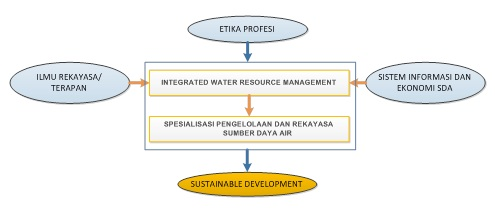

Program Studi Magister Pengelolaan Sumber Daya Air (MPSDA) merupakan program studi magister yang berorientasi pada pemanfaatan dan pendayagunaan ilmu pengetahuan dan teknologi melalui keahlian atau profesi tertentu untuk mengatasi permasalahan dalam bidang Pengelolaan Sumber Daya Air. Problem di lapangan di bidang Pengelolaan Sumber Daya Air yang multisektoral dan multidisiplin yang semakin kompleks tersebut membutuhkan keahlian yang setingkat magister untuk memecahkan permasalahannya.
Prodi MPSDA berawal pada tahun 1986 dengan nama Bandung International Program in Water Resources Development (Bipowered), kerjasama Departemen PU dengan IHE-Delft, Belanda, untuk meningkatkan kemampuan profesional sarjana di bidang sumber daya air. Pada tahun 1991, ITB meneruskan program Bipowered dengan membentuk program Spesialis-1 (SP1). Pada tahun 2007, program tersebut ditingkatkan menjadi Program Studi Magister Pengelolaan Sumber Daya Air (MPSDA) yang ditujukan untuk menghasilkan lulusan setingkat magister yang mampu mengelola bidang sumber daya air secara komprehensif, terintegrasi dan berkelajutan.
Body of Knowledge (BoK) dari kurikulum MPSDA disusun dengan mempertimbangkan pengembangan dari penguasaan lanjut dari ilmu pada tahapan S1, terutama S1 yang berorientasi di bidang teknik dan pengelolaan sumber daya air (S1-TPSDA). BoK Prodi MPSDA mengakomodasi disiplin ilmu-ilmu yang diperlukan dalam mengelola sumber daya air. Disiplin ilmu tersebut antara lain meliputi:
- Ilmu Rekayasa/Terapan
- Integrated Water Resources Management (IWRM)
- Spesialisasi Pengelolaan dan Rekayasa Sumber Daya Air
- Sistem Informasi dan Ekonomi Sumber Daya Air
Sustainable development dalam mengelola sumber daya air merupakan sasaran yang ingin dicapai. BOK yang disusun harus memiliki komposisi disiplin ilmu yang memadai untuk dapat mencapai sasaran. Ilmu rekayasa dasar dan ekosistem sebagai disiplin ilmu hulu selayaknya menjadi prasyarat untuk mengikuti program ini. IWRM sebagai suatu disiplin yang terintegrasi menjadi pondasi dalam pengelolaan SDA yang ditunjang oleh ilmu terapan, etika profesi, dan pemahaman mengenai sistem informasi dan ekonomi SDA. Untuk itu BoK disusun dengan komposisi sebagaimana yang disajikan pada gambar berikut:

IWRM (Integrated Water Resources Management) meliputi lima aspek, yaitu:
- Aspek alamiah sistem SDA (sumber daya air), seperti: air permukaan, air tanah, kualitas air dan pola laku fisik.
- Aspek ekonomi sektoral yang terkait bidang SDA (pertanian, perikanan, penyediaan air baku, pembangkit energi listrik dari tenaga air, navigasi, rekreasi, dan konservasi lingkungan).
- Aspek kebijakan nasional dan konstrainnya (sosial, hukum, institusional, pembiayaan dan lingkungan).
- Aspek hirarki institusional.
- Aspek variasi sumber daya dan kebutuhan (analisis skala DAS (daerah aliran sungai) atau WS (wilayah sungai), interaksi hulu-hilir WS, dan transfer inter-basin).